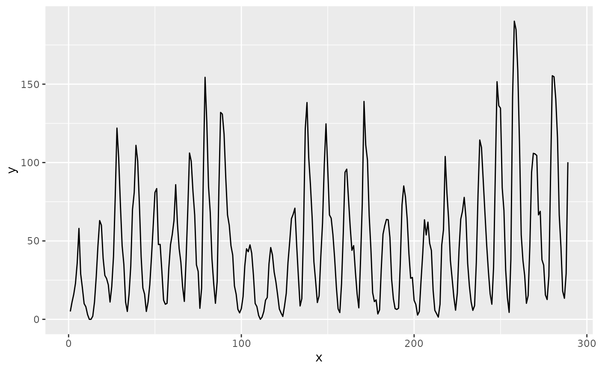
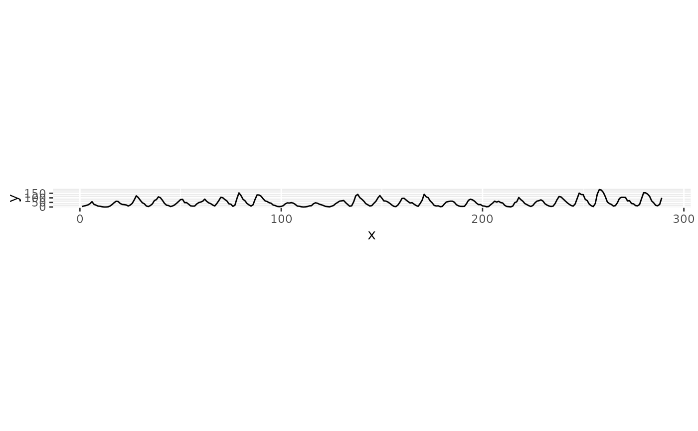

Calculate the optimal aspect ratio of a line graph by banking the slopes to 45 degrees as suggested by W.S. Cleveland. This maximizes the ability to visually differentiate differences in slope. This function will calculate the optimal aspect ratio for a line plot using any of the methods described in Herr and Argwala (2006). In their review of the methods they suggest using median absolute slope banking ('ms'), which produces aspect ratios which are generally the median of the various methods provided here.
Usage
bank_slopes(x, y, cull = FALSE, weight = NULL, method = c("ms", "as"), ...)Arguments
- x
x values
- y
y values
- cull
logical. Remove all slopes of 0 orInf.- weight
No longer used, but kept for backwards compatibility.
- method
One of 'ms' (Median Absolute Slope) or 'as' (Average Absolute Slope). Other options are no longer supported, and will use 'ms' instead with a warning.
- ...
No longer used, but kept for backwards compatibility.
Methods
As written, all of these methods calculate the aspect ratio (x
/y), but bank_slopes will return (y / x) to be compatible
with link[ggplot2]{coord_fixed()}.
Median Absolute Slopes Banking
Let the aspect ratio be \(\alpha = \frac{w}{h}\) then the median absolute slop banking is the \(\alpha\) such that, $$ median \left| \frac{s_i}{\alpha} \right| = 1 $$
Let \(R_z = z_{max} - z_{min}\) for \(z = x, y\), and \(M = median \| s_i \|\). Then, $$ \alpha = M \frac{R_x}{R_y} $$
Average Absolute Slope Banking
Let the aspect ratio be \(\alpha = \frac{w}{h}\). then the mean absolute slope banking is the \(\alpha\) such that, $$ mean \left| \frac{s_i}{\alpha} \right| = 1 $$
Heer and Agrawala (2006) and Cleveland discuss several other methods including average (weighted) orientation, and global and local orientation resolution. These are no longer implemented in this function. In general, either the median or average absolute slopes will produce reasonable results without requiring optimization.
References
Cleveland, W. S., M. E. McGill, and R. McGill. The Shape Parameter of a Two-Variable Graph. Journal of the American Statistical Association, 83:289-300, 1988
Heer, Jeffrey and Maneesh Agrawala, 2006. 'Multi-Scale Banking to 45' IEEE Transactions On Visualization And Computer Graphics.
Cleveland, W. S. 1993. 'A Model for Studying Display Methods of Statistical Graphs.' Journal of Computational and Statistical Graphics.
Cleveland, W. S. 1994. The Elements of Graphing Data, Revised Edition.
See also
banking()
Examples
library("ggplot2")
# Use the classic sunspot data from Cleveland's original paper
x <- seq_along(sunspot.year)
y <- as.numeric(sunspot.year)
# Without banking
m <- ggplot(data.frame(x = x, y = y), aes(x = x, y = y)) +
geom_line()
m

## Using the default method, Median Absolute Slope
ratio <- bank_slopes(x, y)
m + coord_fixed(ratio = ratio)

## Using culling
## Average Absolute Slope
bank_slopes(x, y, method = "as")
#> [1] 0.03682336